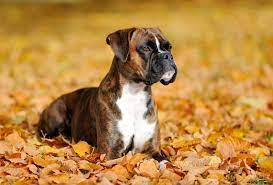

Overview
The Boxer is a medium to large, short-haired dog breed of mastiff-type, developed in Germany. The coat is smooth and tight-fitting; colors are fawn, brindled, or white, with or without white markings. Boxers are brachycephalic (they have broad, short skulls), have a square muzzle, mandibular prognathism (an underbite), very strong jaws, and a powerful bite ideal for hanging on to large prey. The Boxer was bred from the Old English Bulldog and the now extinct Bullenbeisser, which became extinct by crossbreeding rather than by a decadence of the breed.The head is the most distinctive feature of the Boxer. The breed standard dictates that it must be in perfect proportion to the body and above all it must never be too light.[7] The greatest value is to be placed on the muzzle being of correct form and in absolute proportion to the skull. The length of the muzzle to the whole of the head should be a ratio of 1:3.
Characteristics
- Boxers are upbeat and playful
- Their patience and protective nature have earned them a reputation as a great dog with children.
- Boxers do best when exposed to a lot of people and other animals in early puppyhood.
- Energetic and playful
Care
Inferior foods will be packed with chemical flavoring, preservatives and coloring. These can have both short term and long term effects, ranging from an unhealthy coat to skin issues to digestive upset. BHA, BHT and Ethoxyquin are some of the worst chemical preservatives. BHA is a known carcinogens, but legall allowed to be in dog food. In addition, steer clear of meat by-products (those deemed unfit for human consumption such as fatty tissue, intestines, lungs), meat meal ( fillers (corn which can even be just corn dust, vegetable husks, even feathers). Be care with meat-meal. With lower quality brands, this can include meat from diseased animals, questionable out-of-date meat thrown out from supermarkets.What is allowed to be in tap water is pretty outrageous. Known carcinogens and toxic metals are in tap water... hormones, pesticides, fluoride (toxic to canines)... the list goes on. There is a slew of regulated chemicals that, based on one 8-ounce glass, are deemed safe; long-term exposure is not tested. There are also hundreds of untested contaminants. Since our Boxer dogs drink water and only water day after day, for literally their whole lives, it's vital to find another alternative than straight tap water. The easiest method is to install a filter to your kitchen tap. These are moderately inexpensive and not that hard to install. Another option, most applicable if you have a Boxer puppy is to use gallon spring water. Also, be take note of how much your Boxer is drinking; you'll want to make sure that he meets his daily water requirements. That amount can vary depending on age, activity level and the weather (more in the summer); however, in general, a Boxer dog will need a bit over 1.5 cups for each 10 pounds of body weight.